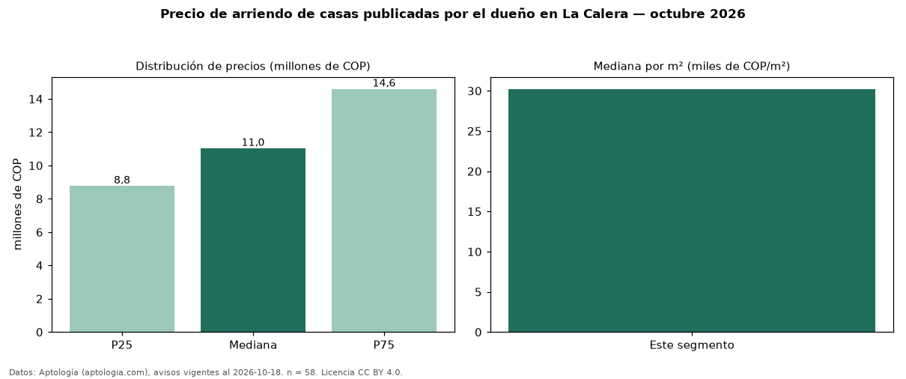

Precio de arriendo de casas publicadas por el dueño en La Calera — octubre 2026
COP 11,03 millones al mes es el canon mediano de casas publicadas por el dueño en arriendo en La Calera (n = 58 avisos). Eso es 8 % menos que la mediana de todas las casas en arriendo de La Calera (COP 12 millones, n = 298); este segmento reúne el 19 % de esos avisos. Por metro cuadrado, la mediana es COP 30.233/m² al mes (n = 53), 3 % por debajo del conjunto de referencia (COP 31.250/m²). El área mediana anunciada es 430 m². El segmento con más oferta es el de 3 o más habitaciones (56 avisos, mediana COP 11,46 millones). La administración mediana declarada es COP 1,90 millones al mes (n = 30), aparte del canon. El estrato más frecuente es 6 (44 % de los avisos con estrato). La mitad central de los avisos va de COP 8,78 millones a COP 14,59 millones (razón 1,7), una dispersión moderada. Datos: Aptología (aptologia.com), CC BY 4.0 — https://www.aptologia.com/arriendo/la-calera. Archivos: PDF, CSV con las cifras y gráfica PNG.

| Avisos únicos | 58 |
|---|---|
| Percentil 25 | COP 8.775.000 |
| Mediana | COP 11.032.500 |
| Percentil 75 | COP 14.594.825 |
| Mediana por m² | COP 30.232 |
Fuente: avisos vigentes de portales inmobiliarios recopilados por Aptología, deduplicados (mínimo 30 avisos únicos por celda). Precios pedidos, no cerrados. Fecha: 2026-10-18.